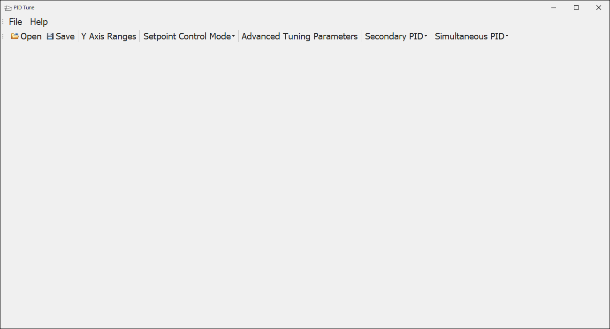
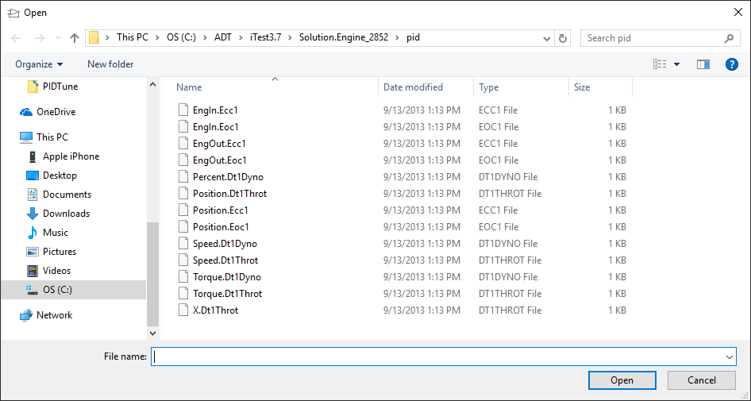
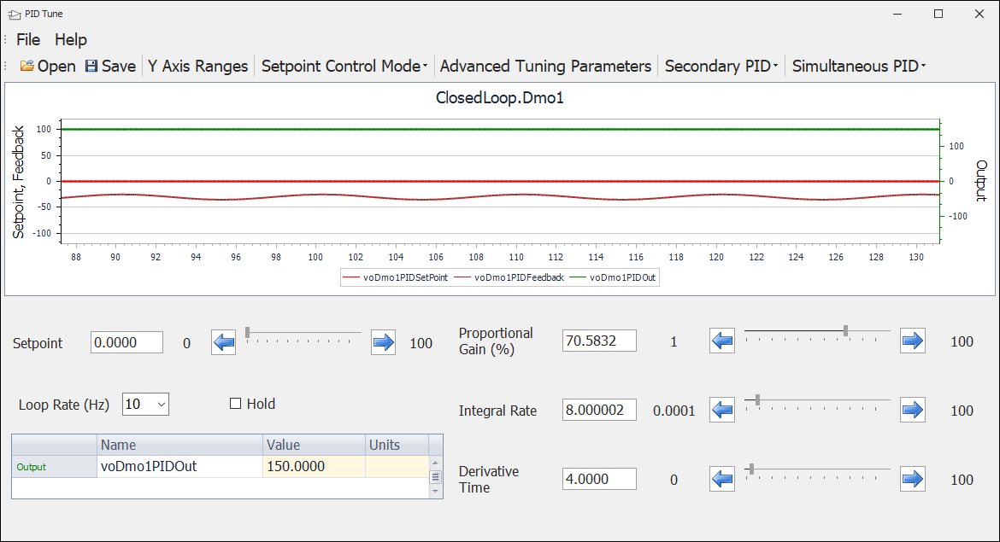
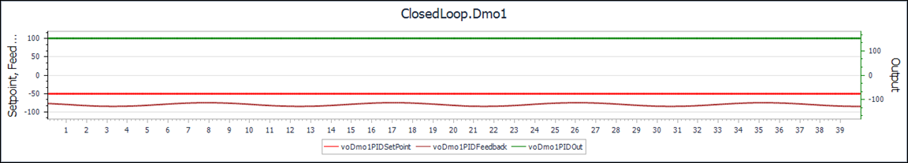
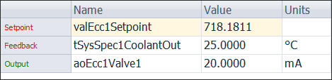
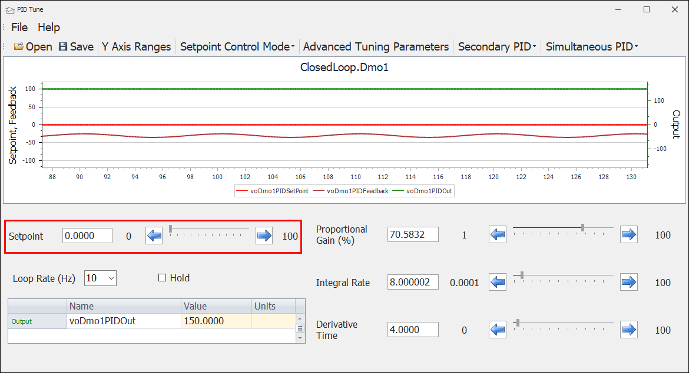
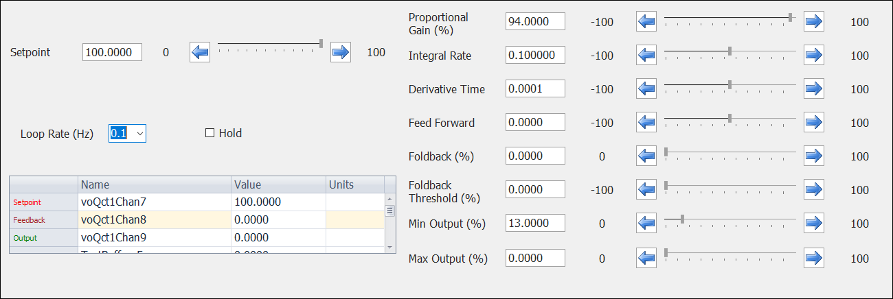
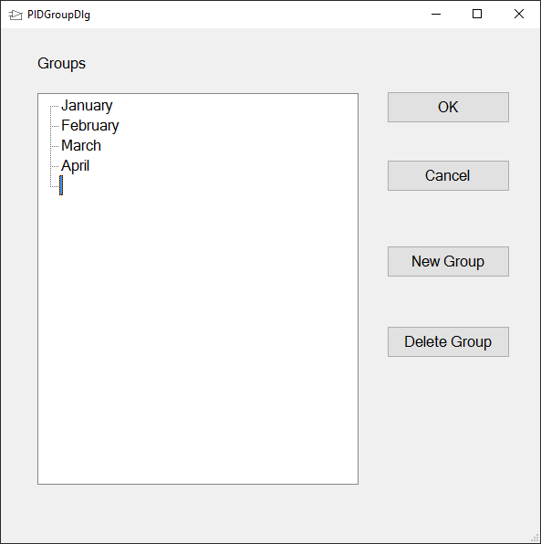

iTest User's Guide
The iTest PID Tune utility is used to tune Proportional Integral Derivative controls (PIDs), which are also referred to as control loops. PIDs stabilize a process or device at a commanded setpoint by measuring an input value and adjusting an output value based on the derived error. PIDs can also track moving setpoints and define the response characteristics of a control system. PID Tune is available while iTest Console or AutomationPanel is running; you can launch it from these applications or from the $EXECUTE folder using PIDTune.exe.
For more information regarding Proportional Integral Derivative controls and control theory, please refer to the following guides: Control Theory and Managing Proportional Integral Derivative Controls.
When you first launch the PID Tune application, an empty dialog displays.
Empty PID Dialog

To open a file, select the Open option on the menu bar and browse for a file to display.
Browse for File

PID Display

 |
NOTE: | The PID Tune window will not display any tuning features until you select a file. |
File Menu Options and Descriptions
| Option | Description |
| Open | Opens the File Select dialog. |
| Close | Closes the open PID file but keeps the application open. |
| Save | Saves the current configuration settings of the PID file. |
| Save Settings To Group | Displays the PIDGroupDlg. This dialog is used to save your current configuration settings as a group. You can later restore the set of PID settings for multiple PID loops. |
| Load Settings From Group | Displays the PIDGroupDlg dialog with all previously saved group configurations. |
| Open Secondary PID | Enables you to open a secondary PID dialog and modify the setpoint value. The dialog display contains values for Units, Setpoint, Feedback, and Output. This feature is useful when there are dependencies between control loops. |
| Open Simultaneous PID | Enables you to open the Simultaneous PID dialog to tune a second PID simultaneously. |
| Setpoint Control Mode | Modifies the tuning mode of the dialog. Modes include: Manual: Enables you to define a single setpoint. Square Wave: Enables you to create a variation in the defined setpoint. When this option is selected, additional boxes for defining the low setting, maximum setting, and the period of time for each setting, display in place of manual control. |
| Advanced Tuning Parameters | Displays the Advanced Tuning Parameters dialog which enables you to select a feed forward channel and/or indicate if the selected PID loop is reverse acting. |
| Recent Files | Displays the five most recent files that have been opened. |
| Exit | Exits the PID Tune display. |
PID Tune Tool Bar Options
| Component | Description |
| Open | Opens the file browser to browse and select a file. |
| Save | Saves the current configuration settings of the PID file. |
| Y Axis Ranges | Opens the Y Axis Ranges dialog. You can use the dialog to use auto range or to specify low and high values for the left and the right y-axes. |
| Setpoint Control Mode | Modifies the tuning mode of the dialog. Modes include: Manual: Enables you to define a single setpoint. Square Wave: Enables you to create a variation in the defined setpoint. When this option is selected, additional boxes for defining the low setting, maximum setting, and the period of time for each setting, display in place of manual control. |
| Advanced Tuning Parameters | Displays the Advanced Tuning Parameters dialog which enables you to select a feed forward channel and/or indicate if the selected PID loop is reverse acting. |
| Secondary PID | Enables you to open a secondary PID dialog and modify the setpoint value. The dialog display contains values for Units, Setpoint, Feedback, and Output. This feature is useful when there are dependencies between control loops. |
| Simultaneous PID | Enables you to open a second PID file in the Simultaneous PID window. This allows you to tune two PIDs simultaneously. Any modifications made to either file can be saved by selecting Save on the main window. Changes can also be saved by closing the Simultaneous Window and selecting Yes when prompted to save. If the main PID window is closed, then the Simultaneous PID window will also close. Specifics: * Only allows tuning in Manual Mode; for more information, refer to Tuning a PID File in Manual Mode. * Loop Rate is linked to the settings in the main PID Tune window. * Advanced Tuning Parameters are linked to the settings in the main PID Tune window (i.e., Reverse Acting and Feed Forward channel features). * The Y-Axes range cannot be modified independent of the main PID Tune window. |
The plot display visually communicates the setpoint and feedback signals (on the left Y-axis) and the control signal (indicated on the right Y-axis). The plot colors correspond to the names displayed at the bottom of the plot.
Plot

The list box identifies the names and colors of the setpoint, feedback, and the control signal that is plotted. This field also indicates the associated values at any moment and its unit of measurement.
List Box and Values

The Manual mode is used to define the PID setpoint value manually. When this setting is in use, the display contains a setpoint control slider and field, which contains the value of the primary PID. You can change the value by using the slider or typing a value into the box. The minimum and maximum setpoint values are defined in the Control Loops. For more information, refer to the Managing Proportional Integral Derivative Controls document.
Manual

The Square Wave mode connects the control process in a feedback loop with a relay or variation of setpoint values. This causes an oscillation in the control signal, which creates a square wave in the plot display. The Square Wave mode contains three different fields for defining the low and high settings and the period of time (in seconds) that the high or low setpoint setting is maintained. This mode is used for tracking moving setpoints.
Square Wave
PID Settings

Additional PID Settings
| Option | Description |
| Loop Rate (Hz) | The loop frequency rate specified in Hz. |
| Hold | When this checkbox is selected, the PID control system is put on hold. This causes the output value to remain at its current value until the hold setting is deselected. |
| Proportional Gain (%) | The percentage of proportional gain affects the responsiveness of the system. A low gain setting causes the system to be sluggish or unresponsive, whereas a high gain setting increases the responsiveness the system, at too high a setting the system may begin to oscillate or vibrate. Use the slider to change the value or enter a value into the text field. |
| Integral Rate | The integral control monitors the cumulative error over time; if the setpoint is not reached, a gain is introduced in order to reach the setpoint value. Use this setting to modify the rate at which the gain is reset to account for the error. Use the slider to change the value or enter a value into the text field. |
| Derivative Time | The derivative control enables you to monitor the change in error with respect to time. You can use this setting to modify the rate at which the error changes at the current moment. Use the slider to change the value or enter a value into the text field. |
| Feed Forward * | The predicated value of PID output that is added to the PID algorithm output. You can use this setting to modify the predicated value of the PID output. Use the slider to change the value or enter a value into the text field. |
| Foldback (%) * | When foldback is active, this percentage is a reduction in the Kp, Kd, and Ki constant values. For example, if the Foldback % is 25 and Ki = 50, then the Ki constant value will be 37.5 when foldback is active. The Foldback % is always a positive percentage. Use the slider to change the value or enter a value into the text field. |
| Foldback Threshold (%) * | The percentage of the setpoint range where the Kp, Kd, and Ki constants are reduced by the Foldback %. The Foldback Threshold % can either be positive or negative. Use the slider to change the value or enter a value into the text field. |
| Min Output (%) * | The minimum value of the output as a percentage. Use the slider to change the value or enter a value into the text field. |
| Max Output (%) * | The maximum value of the output as a percentage. Use the slider to change the value or enter a value into the text field. |
The Advanced Tuning Parameter dialog enables you to define a feed forward control channel and whether the PID is reverse acting.
Feed forward control is used to improve control loop response to disturbances. The control reacts as soon as a disturbance occurs, which cancels the effect of the disturbance. When you select a channel for the feed forward control, the channel value is algebraically added to the control output calculated by iTest, all before the final output value is sent to the hardware.
Enabling the reverse acting setting ensures the control output value adjusts to behave in the correct direction. The default behavior is direct acting, where an increase in the control output causes an increase in the feedback value. For the reverse acting setting, when there is an increase in the control output, there is a decrease in the feedback value. For example, increasing the opening of a chiller flow control valve decreases the temperature of the chilled fluid.
To define these settings, perform the following:
You can specify the range of the left (Setpoint and Feedback) and right (Output) Y-axis scales on the PID Tune dialog.
It is possible to save the settings you have specified when tuning a PID and apply them to other PIDs. These options are available through the File menu.
PID Group

Your previous configuration will display in the PID Tune dialog.
 |
CAUTION: | You cannot undo a deleted PID group. |